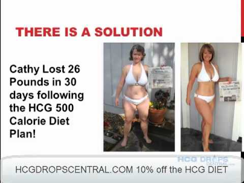
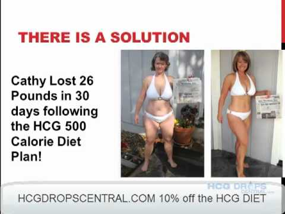

What is a VLCD? | OPTIFAST VLCD Australia
2021.06.21 13:19
Login 1800 671 628 Main Menu 1800 671 628 The OPTIFAST VLCD Program What is a VLCD? Expected rate of weight loss What is ketosis? Is OPTIFAST VLCD right for me? The OPTIFAST product range The OPTIFAST VLCD Program Frequently asked questions Program Hints & Tips Video library Getting started Member benefits Accredited healthcare professionals Health considerations Follow our journey Find a pharmacy Find a healthcare professional Join now Why become a member of OPTIFAST VLCD online support? Re-Set Weight Loss Journey Tips Health conditions Bariatric surgery Diabetes Preparing for pregnancy Healthcare professionals Clinical treatment protocol Become an OPTIFAST accredited healthcare professional Benefits for patient membership News and tips for healthcare professionals Resource centre Register Shop by Product Join Now Main Menu The OPTIFAST VLCD Program What is a VLCD? Expected rate of weight loss What is ketosis? Is OPTIFAST VLCD right for me? The OPTIFAST product range The OPTIFAST VLCD Program Frequently asked questions Program Hints & Tips Video library Getting started Member benefits Accredited healthcare professionals Health considerations Follow our journey Find a pharmacy Find a healthcare professional Join now Why become a member of OPTIFAST VLCD online support? Re-Set Weight Loss Journey Tips Health conditions Bariatric surgery Diabetes Preparing for pregnancy Healthcare professionals Clinical treatment protocol Become an OPTIFAST accredited healthcare professional Benefits for patient membership News and tips for healthcare professionals Resource centre Register Shop by Product Join Now Homepage The Optifast VLCD Program What is a VLCD? Select A Section What is a VLCD? Expected Rate of Weight Loss What is Ketosis? Is the OPTIFAST VLCD Program right for me? The OPTIFAST VLCD product range What is the OPTIFAST Program Are you getting enough protein? The Importance of Protein During Weight Loss OPTIFAST VLCD & Intermittent Fasting
What is a VLCD (Very Low Calorie Diet)? 什么是VLCD （极低卡路里膳食计划）？
English 中文
VLCD stands for "Very Low Calorie Diet".
A VLCD is a low carbohydrate, total food replacement for the dietary management of obesity. It provides 800 calories or less per day, whilst consisting of sufficient protein, fatty acids, carbohydrates, vitamins and minerals for safe and rapid weight loss.
Very low calorie diets (also known as VLEDs or Very Low Energy Diets) have been shown to be very effective in the management of obesity, with weekly weight losses averaging approximately 1-2.5kg per week, providing greater initial weight loss than other forms of calorie restriction.
Reducing energy (calorie) intake to less than 800 calories as well as reducing carbohydrate intake leads to a whole body shift towards fat stores being utilised as the major source of energy through a process called ketosis. This results in consistent and successful weight loss.
Weight loss achieved with VLCDs has also been associated with improvements in:
insulin sensitivity blood pressure triglycerides sleep apnoea and blood sugar levels in adultsVLCD是“极低卡路里膳食计划”的英文首字母简称。
VLCD是一种低碳水化合物摄入、代餐的饮食方式，是针对肥胖的膳食管理方式。该膳食每天提供不超过800千卡的热量，同时含有充足的蛋白质、脂肪、维生素和矿物质，可帮助安全快速减重。
极低卡路里膳食计划（也被称为VLEDs或极低能量膳食）是经验证对肥胖管理非常有效的方式，平均每周减重可达约1-2.5公斤，与其它形式的热量摄入控制方法相比，初始减重更多。
减少能量(卡路里)摄入到每日小于800千卡，同时减少碳水化合物的摄入，会帮助整个身体来消耗作为主要能量源储存的脂肪，这个过程叫做生酮。从而带来持续与有效的减重。
除了减重之外，VLCDs能带来以下各方面指标的改善：
成人的胰岛素敏感性 血压 甘油三酯 改善睡眠窒息症 血糖水平 OPTIFAST VLCD membership Join our OPTIFAST VLCD community and get the all the support you need! Follow ourJourney Share and follow our OPTIFAST VLCD weight loss journey. Stay home
Stay healthy Have OPTIFAST VLCD delivered to you at home.
Buy now through our pharmacy partners. Your Own Portal FREE Personalised meal plans, dietitian approved recipes & track your progress. Join Now! Its Free!
Terms of Use Terms and Conditions Privacy Notice Cookie Policy Contact Us OPTIFAST VLCD is for the dietary management of obesity and must be used under the supervision of a healthcare professional. © 2016 Nestlé Health Science. Welcome Back, Default welcome msg!
It's been 3 months since you've last visited
Your program is out of date and needs to be reset.
Your results will be showing soon enough!
Continue Welcome Back, Default welcome msg!Great Effort! Keep Up the hard work!
- Very Low-Calorie Protein Diet to Lose Weight Fast
- Very Low Calorie Diet - an overview | ScienceDirect Topics
- 7 Things to Know About the 500-Calorie Diet - Healthline
- Very Low-Calorie Diet: Pros, Cons, and What You Can Eat
- Very low calorie diets - NHS
- Diet for rapid weight loss: MedlinePlus Medical Encyclopedia
- Aggressive, Non-Surgical, Medical Weight Loss Using Very .
- How to: 800 calories a day diet | The Fast 800
- Fast 800 Calorie Diet explained with recipes for breakfast .
- VLCD Benefits of Very Low Calorie Diet Plans -Slim&Save .
- Very Low-Calorie Protein Diet to Lose Weight Fast
- Very Low Calorie Diet - an overview | ScienceDirect Topics
- 7 Things to Know About the 500-Calorie Diet - Healthline
- Very Low-Calorie Diet: Pros, Cons, and What You Can Eat
- Very low calorie diets - NHS
- Diet for rapid weight loss: MedlinePlus Medical Encyclopedia
- Aggressive, Non-Surgical, Medical Weight Loss Using Very .
- How to: 800 calories a day diet | The Fast 800
- Fast 800 Calorie Diet explained with recipes for breakfast .
- VLCD Benefits of Very Low Calorie Diet Plans -Slim&Save .
 
